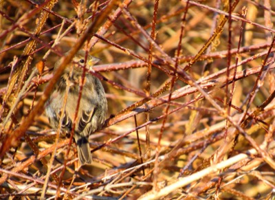
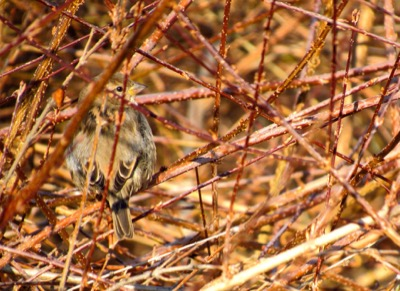
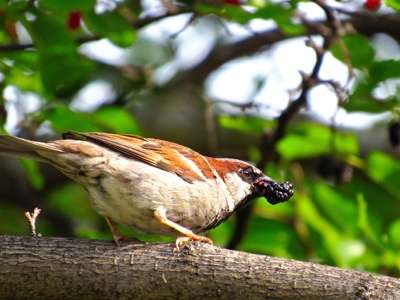
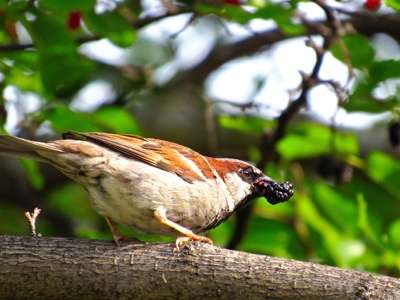
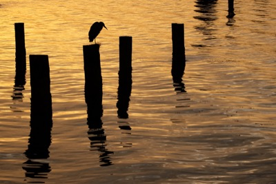
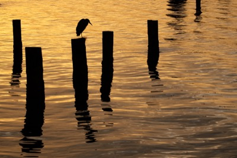
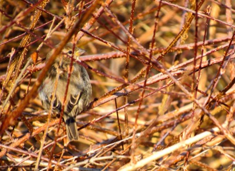

 



 


Photography from Madison, Wisconsin, USA, to Greater Vancouver, British Columbia, Canada. Fixated upon ducks, birds, pretty bugs, trees, leaves, water, reflections, winter and dusks.



© Heikal Badrulhisham. Web development by Heikal Badrulhisham